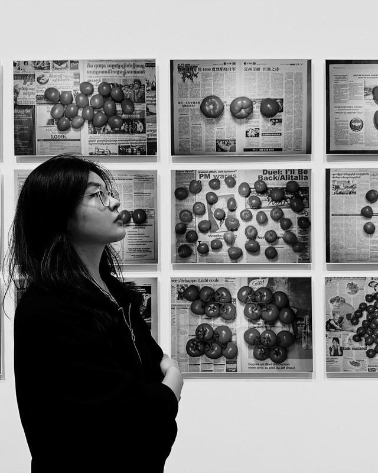

Journalist & Researcher
Hi, I’m Levi.
I’m a researcher and journalist based in the Washington, DC metro area, focused on data-driven storytelling, public opinion, and the ways numbers shape the news.
I currently work at the Pew Research Center. My work spans breaking news, data analysis, and visual reporting — turning complex datasets into clear, human stories.
Below you’ll find my resume, selected writing, multimedia projects, and photography. Feel free to get in touch.